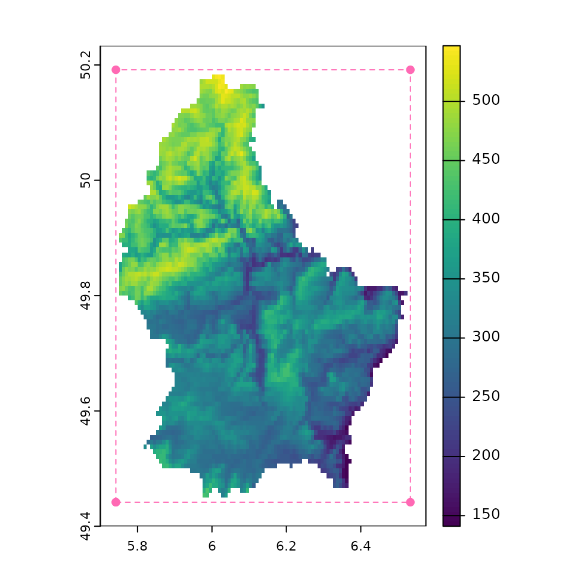
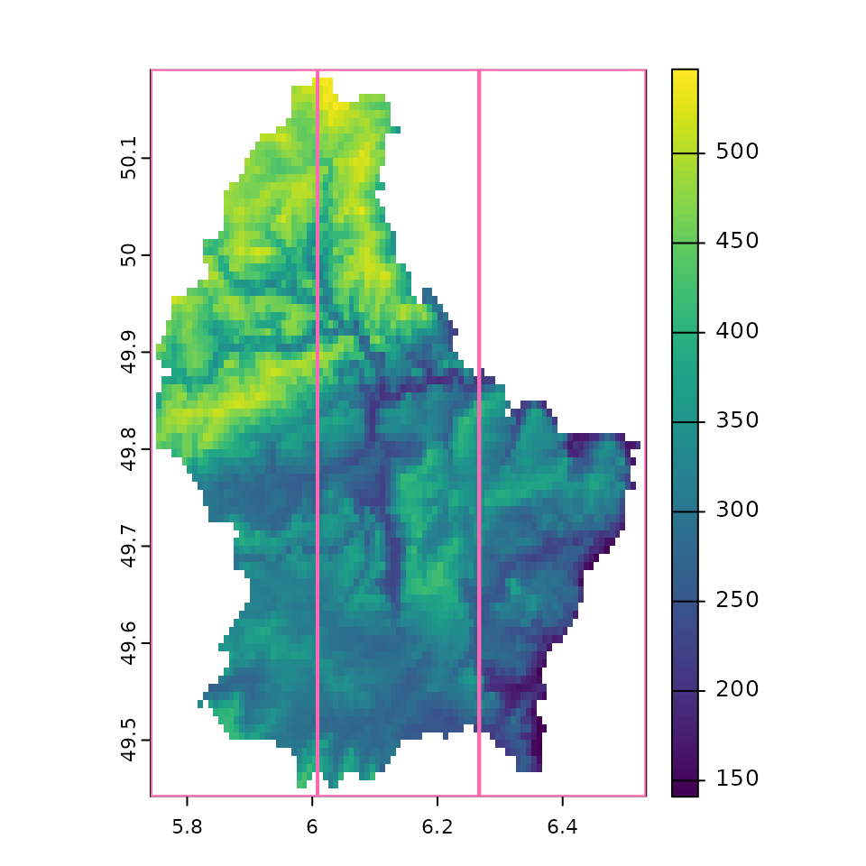
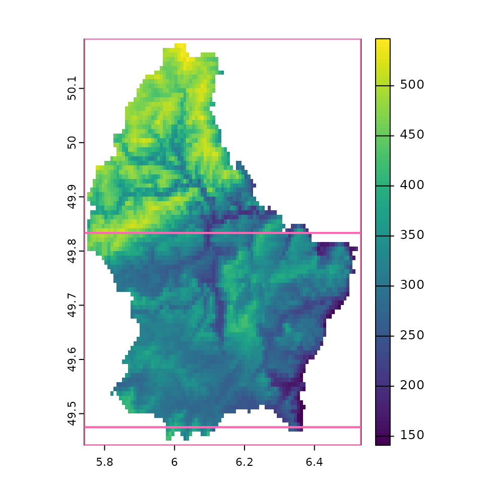
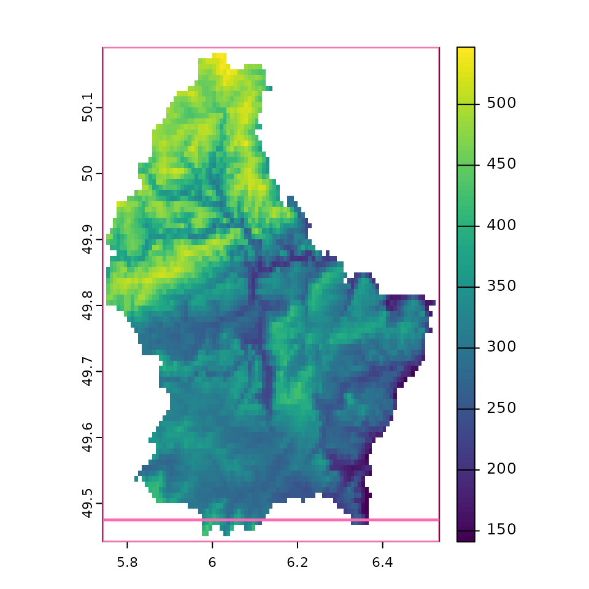
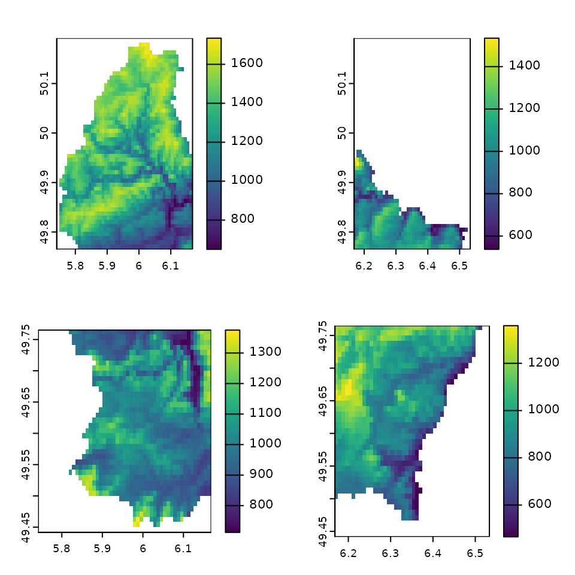

Computationally intensive raster operations that work in pixel-wise
manner may be handled well with dynamic
branching over tiled subsets of the raster.
tar_terra_tiles() is a target factory that enables creating
these dynamic branches so downstream targets can iterate over them. This
is useful when, for example, loading an entire raster into memory and
doing computations on it results in out of memory errors.
In order to use tar_terra_tiles(), we need to break a
raster into smaller pieces. We can do that by providing
extents used by the raster. The concept of extent is
important, so let’s unpack that a bit more.
What is an extent?
The extent describes the four points that cover the
area of a raster. The extent of a raster, r, is printed in
the summary:
# example SpatRaster
f <- system.file("ex/elev.tif", package = "terra")
r <- rast(f)
r
#> class : SpatRaster
#> dimensions : 90, 95, 1 (nrow, ncol, nlyr)
#> resolution : 0.008333333, 0.008333333 (x, y)
#> extent : 5.741667, 6.533333, 49.44167, 50.19167 (xmin, xmax, ymin, ymax)
#> coord. ref. : lon/lat WGS 84 (EPSG:4326)
#> source : elev.tif
#> name : elevation
#> min value : 141
#> max value : 547But we can get the extent with ext
(extent):
r_ext <- ext(r)
r_ext
#> SpatExtent : 5.74166666666667, 6.53333333333333, 49.4416666666667, 50.1916666666667 (xmin, xmax, ymin, ymax)Which maps onto the four corners of the raster here:
# some plot helpers
rect_extent <- function(x, ...) {
rect(x[1], x[3], x[2], x[4], ...)
}
plot_extents <- function(x, ...) {
invisible(lapply(x, rect_extent, border = "hotpink", lwd = 2))
}
extend(r, 5) |> plot()
lines(r_ext, col = "hotpink", lty = 2)
points(r_ext, col = "hotpink", pch = 16)
Some geo-computational operations can be done independently of one another—we want to take advantage of that, and we can facilitate this by breaking the raster into smaller pieces, by creating new extents that describe new subsets of the raster.
We can use this extent information downstream in the analysis to describe how to break up a raster. This is similar to how we might want to chunk up a data frame into groups to distribute to different CPU cores. To help with this, we’ve got some helper functions.
Helper functions to create multiple extents of a raster
geotargets provides three helper functions that take a
SpatRaster and output the extents for tiles:
We will demonstrate these now.
tile_n()
We can use tile_n(), which is the simplest of the three.
It produces about n tiles in a grid.
r_tile_4 <- tile_n(r, 4)
#> creating 2 * 2 = 4 tile extents
r_tile_4
#> [[1]]
#> xmin xmax ymin ymax
#> 5.741667 6.141667 49.816667 50.191667
#>
#> [[2]]
#> xmin xmax ymin ymax
#> 6.141667 6.533333 49.816667 50.191667
#>
#> [[3]]
#> xmin xmax ymin ymax
#> 5.741667 6.141667 49.441667 49.816667
#>
#> [[4]]
#> xmin xmax ymin ymax
#> 6.141667 6.533333 49.441667 49.816667
plot(r)
plot_extents(r_tile_4)
tile_grid()
For more control, use tile_grid(), which allows
specification of the number of rows and columns to split the raster
into. Here we are specify that we want three columns and 1 row:
r_grid_3x1 <- tile_grid(r, ncol = 3, nrow = 1)
r_grid_3x1
#> [[1]]
#> xmin xmax ymin ymax
#> 5.741667 6.008333 49.441667 50.191667
#>
#> [[2]]
#> xmin xmax ymin ymax
#> 6.008333 6.266667 49.441667 50.191667
#>
#> [[3]]
#> xmin xmax ymin ymax
#> 6.266667 6.533333 49.441667 50.191667
plot(r)
plot_extents(r_grid_3x1)
tile_blocksize()
The third included helper is tile_blocksize(), which
tiles by file block size. The block
size is a property of raster files, and is the number of pixels
(in the x and y direction) that is read into memory at a time. Tiling by
multiples of block size may therefore be more efficient because only one
block should need to be loaded to create each tile target. You can find
the blocksize with fileBlocksize:
fileBlocksize(r)
#> rows cols
#> [1,] 43 95This tells us that it reads in the raster in 43x95 pixel sizes.
The tile_blocksize function is similar to
tile_grid, except instead of saying how many rows and
columns, we specify in units of blocksize.
If we just run tile_blocksize() on r we get
the extents of the specified blocksize:
tile_blocksize(r)
#> [[1]]
#> xmin xmax ymin ymax
#> 5.741667 6.533333 49.833333 50.191667
#>
#> [[2]]
#> xmin xmax ymin ymax
#> 5.741667 6.533333 49.475000 49.833333
#>
#> [[3]]
#> xmin xmax ymin ymax
#> 5.741667 6.533333 49.441667 49.475000Which is the same as specifying blocksize for row and column at unit 1:
r_block_size_1x1 <- tile_blocksize(r, n_blocks_row = 1, n_blocks_col = 1)
r_block_size_1x1
#> [[1]]
#> xmin xmax ymin ymax
#> 5.741667 6.533333 49.833333 50.191667
#>
#> [[2]]
#> xmin xmax ymin ymax
#> 5.741667 6.533333 49.475000 49.833333
#>
#> [[3]]
#> xmin xmax ymin ymax
#> 5.741667 6.533333 49.441667 49.475000
plot(r)
plot_extents(r_block_size_1x1)
Here the block size is the same size for the first two blocks, and then a much more narrow block. This is different to the two other tile methods.
Here the column block size is the full width of the raster.
So we could instead have the blocksize extent be written out to 2 blocks in a row, and 1 block size for the columns:
r_block_size_2x1 <- tile_blocksize(r, n_blocks_row = 2, n_blocks_col = 1)
r_block_size_2x1
#> [[1]]
#> xmin xmax ymin ymax
#> 5.741667 6.533333 49.475000 50.191667
#>
#> [[2]]
#> xmin xmax ymin ymax
#> 5.741667 6.533333 49.441667 49.475000
plot(r)
plot_extents(r_block_size_2x1)
This only works when the SpatRaster points to a
file—in-memory rasters have no inherent block size.
sources(r)
#> [1] "/home/runner/work/_temp/Library/terra/ex/elev.tif"
# force into memory
r2 <- r + 0
sources(r2)
#> [1] ""
# this now errors
tile_blocksize(r2)
#> Error: [aggregate] values in argument 'fact' should be > 0Example targets pipeline
When developing a targets pipeline using
tar_terra_tiles() with tile_blocksize(), it’s
a good idea to figure out how many tiles tile_blocksize()
will create before implementing tar_terra_tiles(). We’ll
start by making a bigger raster to experiment with using
terra::disagg(), (which makes a higher resolution raster by
breaking the pixels into smaller pixels), and making multiple
layers.
# contents of _targets.R
library(targets)
library(geotargets)
library(terra)
geotargets_option_set(gdal_raster_driver = "COG")
list(
tar_target(
raster_file,
system.file("ex/elev.tif", package = "terra"),
format = "file"
),
tar_terra_rast(
r,
disagg(rast(raster_file), fact = 10)
),
# add more layers
tar_terra_rast(
r_big,
c(r, r + 100, r * 10, r / 2),
memory = "transient"
)
)
tar_make()
#> terra 1.8.10
#> ▶ dispatched target raster_file
#> ● completed target raster_file [0 seconds, 7.994 kilobytes]
#> ▶ dispatched target r
#> ● completed target r [0.01 seconds, 822.781 kilobytes]
#> ▶ dispatched target r_big
#> ● completed target r_big [0.023 seconds, 4.055 megabytes]
#> ▶ ended pipeline [0.428 seconds]
#>
tar_load(r_big)
tile_blocksize(r_big)
#> [[1]]
#> xmin xmax ymin ymax
#> 5.741667 6.168333 49.765000 50.191667
#>
#> [[2]]
#> xmin xmax ymin ymax
#> 6.168333 6.533333 49.765000 50.191667
#>
#> [[3]]
#> xmin xmax ymin ymax
#> 5.741667 6.168333 49.441667 49.765000
#>
#> [[4]]
#> xmin xmax ymin ymax
#> 6.168333 6.533333 49.441667 49.765000Four tiles is reasonable, so we’ll go with that. Note that we have to
ensure the r_big target is not in-memory for
tar_terra_tiles(), so we set the targets option
memory = "transient". See the targets
documentation on memory for details.
The process that happens from here can be thought of as
split-apply-combine.
-
Split the raster into pieces using the
tar_terra_tiles()target factory- This returns tiles whose extents are created by one
of the tile functions described above (
tile_n(),tile_grid(), ortile_blocksize()), supplying this totile_fun.
- This returns tiles whose extents are created by one
of the tile functions described above (
-
Apply a function to the rasters.
- This can be any function that would work on a raster, in the case
below we use the
appfunction fromterra, which applies some function to the cells of a raster. - To do this we use
tar_terra_rast()and then supply thepattern = map(tiles), wheretilesis the name of the target created withtar_terra_tiles(). You can think ofpattern = map(tiles)as saying: “Do the task for each of the tiles we have specified and return them as a list”
- This can be any function that would work on a raster, in the case
below we use the
-
Combine the list of rasters together.
- In this case we use
tar_terra_rast()and usemerge()on the tiles.
- In this case we use
# contents of _targets.R
library(targets)
library(geotargets)
library(terra)
geotargets_option_set(gdal_raster_driver = "COG")
tar_option_set(memory = "transient")
list(
tar_target(
raster_file,
system.file("ex/elev.tif", package = "terra"),
format = "file"
),
tar_terra_rast(
r,
disagg(rast(raster_file), fact = 10)
),
tar_terra_rast(
r_big,
c(r, r + 100, r * 10, r / 2),
memory = "transient"
),
tar_terra_tiles(
tiles,
raster = r_big,
tile_fun = tile_blocksize,
description = "split raster into tiles"
),
tar_terra_rast(
tiles_mean,
app(tiles, \(x) mean(x, na.rm = TRUE)),
pattern = map(tiles),
description = "some computationaly intensive task performed on each tile"
),
tar_terra_rast(
merged_mean,
merge(sprc(tiles_mean)),
description = "merge tiles into a single SpatRaster"
)
)
tar_make()
#> terra 1.8.10
#> ✔ skipping targets (1 so far)...
#> ▶ dispatched target tiles_exts
#> ● completed target tiles_exts [0.005 seconds, 153 bytes]
#> ▶ dispatched branch tiles_11882e184aa27102
#> ● completed branch tiles_11882e184aa27102 [0.003 seconds, 982.55 kilobytes]
#> ▶ dispatched branch tiles_e39b1bcab4d45ba0
#> ● completed branch tiles_e39b1bcab4d45ba0 [0.036 seconds, 249.778 kilobytes]
#> ▶ dispatched branch tiles_b14b762418a51f63
#> ● completed branch tiles_b14b762418a51f63 [0.002 seconds, 599.615 kilobytes]
#> ▶ dispatched branch tiles_bfb55de5c880456f
#> ● completed branch tiles_bfb55de5c880456f [0.002 seconds, 483.702 kilobytes]
#> ● completed pattern tiles
#> ▶ dispatched branch tiles_mean_1bcefdb80d0879e0
#> ● completed branch tiles_mean_1bcefdb80d0879e0 [2.14 seconds, 159.194 kilobytes]
#> ▶ dispatched branch tiles_mean_4ff32c943e05dc36
#> ● completed branch tiles_mean_4ff32c943e05dc36 [1.861 seconds, 49.028 kilobytes]
#> ▶ dispatched branch tiles_mean_17723520c935f474
#> ● completed branch tiles_mean_17723520c935f474 [1.6 seconds, 100.948 kilobytes]
#> ▶ dispatched branch tiles_mean_984998bf0804c2cf
#> ● completed branch tiles_mean_984998bf0804c2cf [1.43 seconds, 87.272 kilobytes]
#> ● completed pattern tiles_mean
#> ▶ dispatched target merged_mean
#> ● completed target merged_mean [0.015 seconds, 879.912 kilobytes]
#> ▶ ended pipeline [7.584 seconds]
#> We can see from tar_make() output above and the plots
below that tiles and tiles_mean are both
patterns with four branches each.
library(terra)
tar_load(tiles_mean)
op <- par(mfrow = c(2, 2))
for (i in seq_along(tiles_mean)) {
plot(tiles_mean[[i]])
}
par(op)And combined, they make the full plot again.